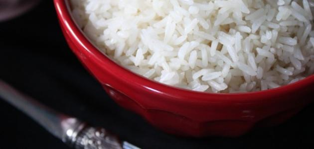
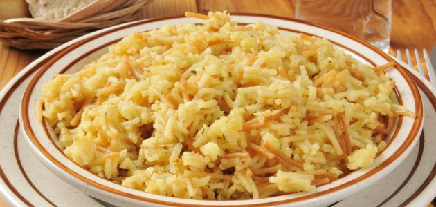
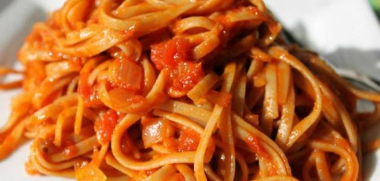

Cooking For Men - الطبخ للجدعان

الأرز الابيض السادة
- المكونات
- ثلاثة أكواب من الأرز (تكفي من 5 ل 6 افراد).
- ستة اكواب من الماء.
- رشّة من الملح.
- ثلاث ملاعق كبيرة من الزيت او ملعقتين من السمن
- طريقة التحضير
- نغسل الأرز جيداً، ثم ننقعه في كمية من الماء الدافئ مدة ثلاثين دقيقة.
- نضع القدر على النار، ونضيف ستة أكواب من الماء ثم نتركه حتى يغلي.
- نضيف الأرز للقدر، نترك الأرز يغلي مع الماء ونضيف الملح حسب الرغبة.
- نصفي الأرز من الماء في مصفاة.
- نضع القدر نفسه بعد تفرغته من الماء والأرز على نار هادئة، ونضع السمن أو الزيت ثم نسكب الأرز ونتركه حوالي خمس عشرة دقيقة على نارٍ هادئة جداً.
- معلومات عامة
- في الغالب كميّة الأرز تكون حسب عدد أفراد الأسرة؛ فكلّ كوبٍ من الأرز يكفي لشخصين.
- يجب أن تكون كميّة الماء غطّت الأرز، وزادت عنه بحوالي سنتيمترين فوق سطح الأرز مع مراعاة أنّ الأزر الجديد يحتاج لماءٍ أقل من الأرز القديم.
- يجب أن تكون النّار عاليةً بعد وضع الماء حتّى يغلي، ثمّ نخفف النّار على أقلّ مستوى، ويُفضّل وضع صفيحة تحت القدر، ثمّ يُترك حتّى ينضج.
فيديو طريقة عمل الارز الابيض السادة

الأرز الأبيض بالشعيرية
- المكونات
- كوب من الأرز.
- نصف كوب من الشعيرية.
- ملعقة كبيرة من السمنة، أو ملعقتين كبيرتين من الزيت.
- ملعقة صغيرة من الملح.
- طريقة التحضير
- نغسل الأرز جيداً ونضعه في وعاء، وننقعه لمدة ساعة حتى نتخلّص من النشا.
- نضع السمنة أو الزيت في قدر على نار هادئة، ثم نضيف الشعيرية ونقلّبها حتى تصبح ذهبية اللون.
- نضيف الأرز للشعيرية المحمصة ونقلب جيداً حتى تتوزع بالشعيرية جيداً.
- نضيف الماء الساخن والملح، ونغطي الوعاء ونتركه على نار عالية لعدة دقائق.
- نخفف النار ونغطّي القدر دون تحريك الأرز لمدة عشر دقائق، ثم نطفئ النار ونترك القدر مغطىً لحين موعد التقديم.
فيديو طريقة عمل الارز الابيض بالشعرية

المكرونة بالصلصة الحمراء
- المكونات
- أربع مئة غرام من المعكرونة السباغيتي الطويلة.
- علبتان من معجون الطماطم.
- ملعقتان كبيرتان من زيت الذرة.
- بهارات (حسب الرغبة).
- ملح (حسب الرغبة).
- طريقة التحضير
- اسلق معكرونة السباغيتي؛ حيث عليك وضعها في قدرٍ من الماء، وأضيفي لها بعض الملح، واتركيها حتى تنضج، وبعد النّضج أخرجيها من الماء وصفيها جيداً.
- أضيفي مقدار معجون الطّماطم والبهارات والملح، وحرّكي جميع المكوّنات معاً واتركيها على النار حتى تبدأ بالغليان.
- ضعي معكرونة السباغيتي المسلوقة في صحن التقديم.
فيديو طريقة عمل المكرونة بالصلصة